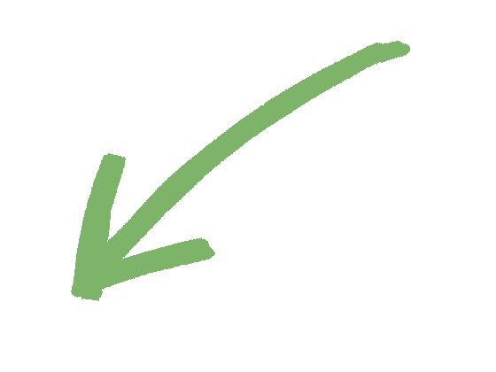
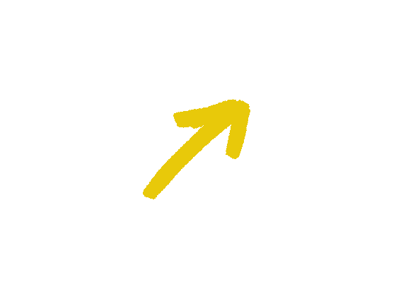
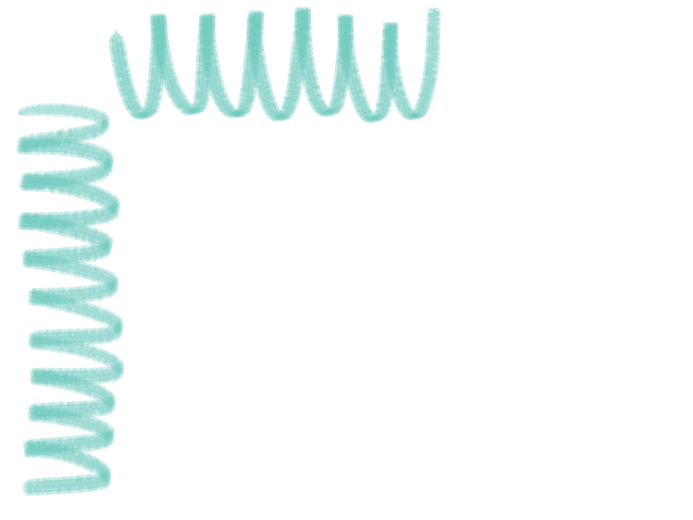
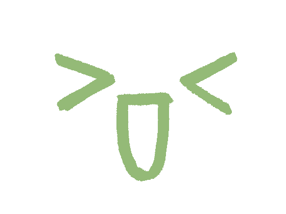
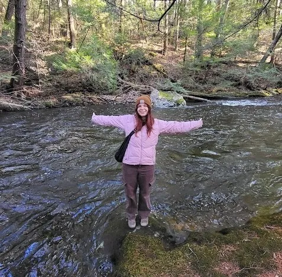

BRIDGET
bridget.g.knight@gmail.com
KNIGHT
- visual storytelling
- technical design
- science visualization




featured project
halocline: a bioluminescent environment
Blender · Photoshop · Clip Studio Paint · 2026
2D Interpretation

Digital illustration — Photoshop, Clip Studio Paint
Development & Process
Click an image to get a closer look.



about me!
Howdy! I'm a Boston-based illustrator, concept artist, and science communicator (and science nerd!) currently pursuing my MFA in Illustration at SCAD. I focus on uniting art and science, fueled by a passion for creating immersive worlds and visuals for scientific visualization, games, and storytelling.
read more >
